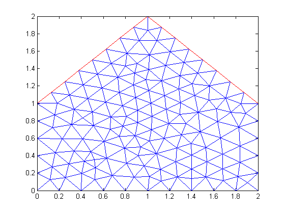

Example 4: Create a polygon
Create a 5 sided house-shaped polygon. The inner region is 'regionB' and the exterior region is 'regionA'. The exterior region is not meshed.
import pdetbplus.*; % import package % Initial setting for mesh display showMesh = true; % show mesh in plots % Define points for polygon pts{1} = pointObject(0,0); pts{2} = pts{1} + [0,1]; pts{3} = pts{2} + [1,1]; pts{4} = pts{3} + [1,-1]; pts{5} = pts{4} - [0,1]; % Create polygon. % The points are ordered clockwise and therefore edges will be defined clockwise. Therefore the left % region is set to 'regionA' and is set to be the exterior region. e4 = geometryObject.createPolygon('name','poly3','points',pts,'leftRegion','regionA','rightRegion','regionB',... 'leftRegionIsExterior',true); % Make a copy so e4 can be used elsewhere tmp = e4; % Mesh tmp.initMesh('showMesh',showMesh);
See help for pointObject geometryObject